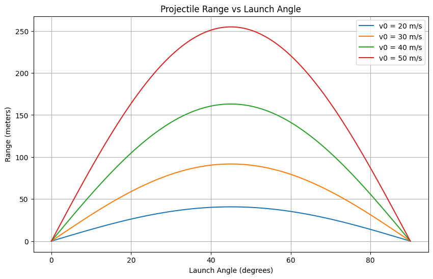

Investigation of the Range as a Function of the Angle of Projection
1. Theoretical Foundation
Projectile motion is governed by the basic equations of motion under constant acceleration due to gravity. To derive the equations, we consider two components of motion: horizontal (x-direction) and vertical (y-direction).
1.1 Equations of Motion
In projectile motion, the only force acting on the projectile (ignoring air resistance) is gravity, which accelerates the object downward with a constant acceleration, \( g \).
The horizontal and vertical motions are independent of each other. We can describe each with kinematic equations:
- Horizontal motion (no acceleration):
$$ x(t) = v_0 \cos(\theta) \cdot t $$
where:
- \( v_0 \) is the initial velocity,
- \( \theta \) is the angle of projection,
-
\( t \) is time.
-
Vertical motion (constant acceleration due to gravity): $$ y(t) = v_0 \sin(\theta) \cdot t - \frac{1}{2} g t^2 $$
1.2 Time of Flight
To find the time of flight, we need to determine when the projectile hits the ground, i.e., when \( y(t) = 0 \). Using the vertical motion equation:
Factoring out \( t \), we get:
The solutions are \( t = 0 \) (the initial launch) and \( t = \frac{2 v_0 \sin(\theta)}{g} \) (the time when the projectile hits the ground).
Thus, the time of flight is:
1.3 Horizontal Range
The horizontal range \( R \) is the distance traveled in the horizontal direction during the time of flight. From the horizontal motion equation:
Substituting the expression for \( t_f \):
Simplifying:
1.4 Family of Solutions
This equation shows how the range \( R \) depends on the initial velocity \( v_0 \), the gravitational acceleration \( g \), and the launch angle \( \theta \). The term \( \sin(2\theta) \) shows that the range is maximized when \( \theta = 45^\circ \) because \( \sin(90^\circ) = 1 \).
Thus, for a given \( v_0 \) and \( g \), the range depends on the launch angle. The solution also highlights that the range is symmetric: for any angle \( \theta \), there is a complementary angle \( 90^\circ - \theta \) that gives the same range.
2. Analysis of the Range
2.1 Dependence on Launch Angle
From the derived equation \( R = \frac{v_0^2 \sin(2\theta)}{g} \), we can see that the horizontal range is a function of \( \sin(2\theta) \). Therefore, the range is:
- Maximized at \( \theta = 45^\circ \), where \( \sin(90^\circ) = 1 \).
- Zero at \( \theta = 0^\circ \) and \( \theta = 90^\circ \), since \( \sin(0^\circ) = 0 \) and \( \sin(180^\circ) = 0 \).
- Symmetrical around \( \theta = 45^\circ \).
2.2 Dependence on Initial Velocity and Gravitational Acceleration
From the equation for the range, we observe that the range \( R \) is directly proportional to the square of the initial velocity \( v_0 \) and inversely proportional to the gravitational acceleration \( g \). Therefore:
- Initial velocity: As \( v_0 \) increases, the range increases quadratically. This implies that doubling the initial velocity quadruples the range.
- Gravitational acceleration: The range decreases with an increase in gravitational acceleration, so on a planet with stronger gravity, the range of a projectile would be shorter.
3. Practical Applications
This model is a simplified version of projectile motion, which assumes no air resistance and level ground. In real-world applications, several factors influence projectile motion:
- Air resistance: Drag forces reduce the horizontal range and make the trajectory curve differently. The more streamlined the projectile, the less drag it experiences.
- Uneven terrain: The model assumes level ground, but if the projectile is launched at an incline or on a hill, the calculations become more complex.
- Wind: Wind can modify both the trajectory and range by altering the horizontal velocity of the projectile.
4. Implementation
Below is a Python script to simulate projectile motion and visualize the range as a function of the launch angle for different initial velocities.
import numpy as np
import matplotlib.pyplot as plt
# Constants
g = 9.81 # Acceleration due to gravity (m/s^2)
# Function to calculate the range based on angle and initial velocity
def calculate_range(v0, angle): # Convert angle to radians
theta = np.radians(angle) # Range formula
R = (v0\*_2 _ np.sin(2\*theta)) / g
return R
# Generate data for multiple initial velocities
initial_velocities = [20, 30, 40, 50] # Different initial velocities in m/s
angles = np.linspace(0, 90, 100) # Angles from 0 to 90 degrees
# Plotting
plt.figure(figsize=(10,6))
for v0 in initial_velocities:
ranges = [calculate_range(v0, angle) for angle in angles]
plt.plot(angles, ranges, label=f'v0 = {v0} m/s')
plt.title('Projectile Range vs Launch Angle')
plt.xlabel('Launch Angle (degrees)')
plt.ylabel('Range (meters)')
plt.legend()
plt.grid(True)
plt.show()
